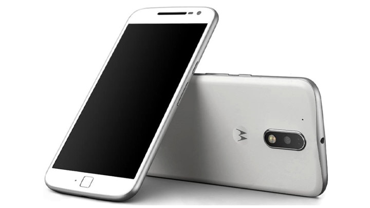
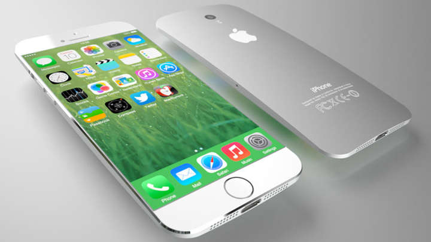
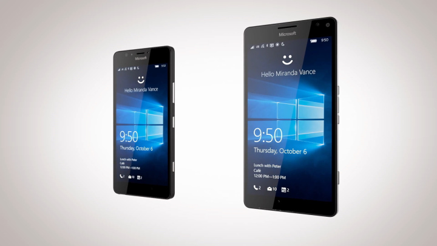
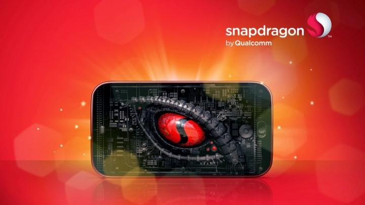
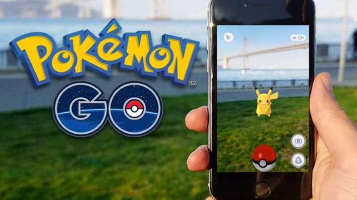
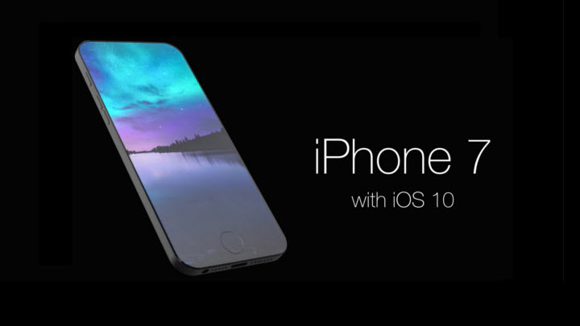

Celular

A Motorola apresentou oficialmente os seus novos smartphones para o mundo. O Moto G4, Moto G4 Plus e o Moto G4 Play, aparelhos da quarta geração da linha mais bem sucedida da fabricante norte-americana – recentemente adquirida pela Lenovo –, foram revelados primeiramente em um evento que aconteceu na Índia adiantando tudo o que posteriormente seria apresentado por aqui.

Não dá para negar: os lançamentos da Apple, principalmente no segmento de smartphones, são um dos mais esperados do ano. Em 2016, além do iPhone SE lançado em março, a Maçã deve apresentar o novíssimo iPhone 7 e dar continuidade a uma das famílias mais bem-sucedidas da indústria de dispositivos móveis.
A segunda geração de smartphones da ASUS traz melhorias consideráveis com relação aos seus antecessores, mas não abre mão do ótimo custo-benefício que a empresa tenta trazer como seu diferencial. Com um design premiado, aprimoramentos à interface de uso, especificações bastante significativas e um bom preço, o dispositivo une elementos atraentes para o mercado brasileiro.

Comprar um celular com Windows Phone em 2016: eis a dúvida de muitos. O sistema que popularizou os smartphones da linha Lumia tem avaliações positivas no Brasil, mas perde muitos usuários para o Android e o iPhone (iOS). Isso tudo é devido à falta de apps e outros problemas. Ainda assim, os telefones da Microsoft – e da Nokia – chamam atenção pelos preços interessantes, câmeras boas e alto desempenho.
Apesar de já ser uma informação difundida, ainda existe o mito de que os vírus são problemas exclusivos dos computadores com plataforma Windows – quem dera. Por conta disso, muitas pessoas ainda não se preocupam ou não desconfiam que os malwares podem atrapalhar a sua rotina ao infectar o seu smartphone Android. Vamos listar neste mini quais são os 12 possíveis pontos para ficar atento e como manter o seu celular saudável e operante.

Confirmando boatos e expectativas, a Qualcomm anunciou nesta segunda-feira (11) o lançamento do chipset Snapdragon 821. A novidade se trata de uma ligeira atualização para o popular Snapdragon 820 e promete oferecer um desempenho médio 10% maior que o do hardware mais antigo. A novidade chega ao mercado equipada com um processador quad-core de 2,4 GHz como seu principal diferencial (o do 820 tem 2,1 GHz).

Como você já deve ter percebido, Pokémon GO conta com muitos segredos e elementos escondidos, ideal para os caçadores de mitos se deliciarem em busca de novidades. Entre elas, há algumas muito conhecidas, como a maneira de capturar o Pikachu como monstrinho inicial ou a forma de evoluir o Eevee para a criatura desejada. John Hanke, o criador da Niantic, já mencionou [...]

O iPhone 7 vai ser apresentado oficialmente para a imprensa e para os consumidores no dia 7 de setembro (quarta-feira).
Como já mostraram diversos vazamentos, não veremos grandes mudanças no design ou nas funcionalidades — nada que vá muito além da presença de uma câmera dupla no iPhone 7 Plus. E para os próximos anos? Será que podemos aguardar mudanças consideráveis para os dispositivos da Apple?